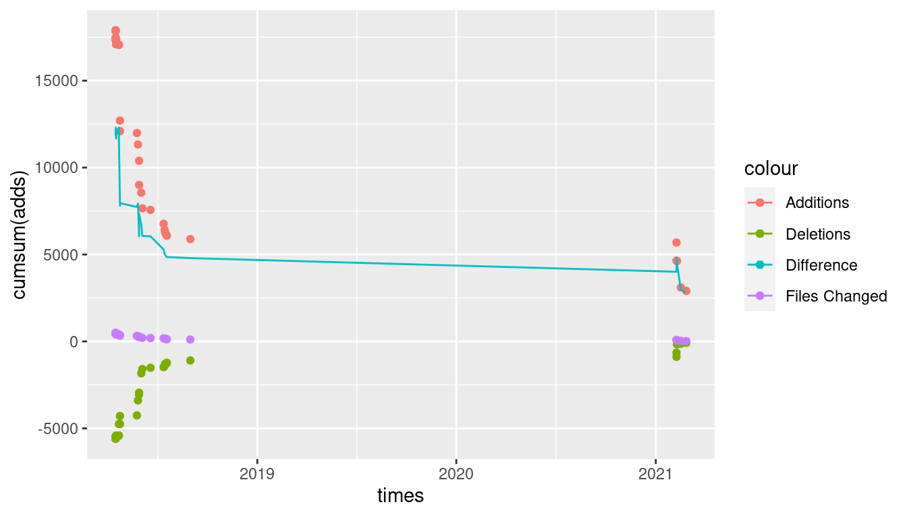

9 Backmatter
9.1 Colophon
This document is typeset with LaTeX using a custom template based on KOMA-script SCRBOOK class. The layout is based on a standard A4 paper (210 x 297mm), with 40mm margins and 10mm of binding offset.
The typesetting software used the XeTeX engine and the text is set in the open source IBM Plex font family – in Serif, Sans Serif and Monospace variants.
9.2 Credits
This project is constituted by files written in Markdown syntax and exported either as a standalone website both as printer-ready product. This is due to the awesome work of the people behind different libraries:
As well, for the computational infrastructure, some tools have been used:
- NLTK
- UDPIPE
- SciPY
9.4 Progress in the repository
This graph represents the addition and deletion amount in the files of the project in function of time.

Abel, Andrea. 2014. “A Trilingual Learner Corpus Illustrating European Reference Levels.” RiCOGNIZIONI. Rivista Di Lingue e Letterature Straniere e Culture Moderne 1 (2): 111–26. https://doi.org/10.13135/2384-8987/702.
Adger, David. 2013. A Syntax of Substance. Linguistic Inquiry Monographs. MIT Press. https://books.google.cz/books?id=nfswKAqywTYC.
Aristotele. 2003. Organon / Aristotele ; Traduzione Di Giorgio Colli. Adelphi (Series). Adelphi. http://www.nilalienum.it/Filosofia/Filosofia/Autori%20e%20Opere/Aristotele/Aristotele-Organon.pdf.
Barbera, Manuel et al. 2003. “VALICO: Varietà Apprendimento Lingua Italiana Corpus Online.” Università di Torino. http://www.valico.org/.
Biber, D., S. Conrad, R. Reppen, and Cambridge University. 1998. Corpus Linguistics: Investigating Language Structure and Use. Cambridge Approaches to Linguistics. Cambridge University Press. https://books.google.cz/books?id=2h5F7TXa6psC.
Chomsky, Noam. 1995. The Minimalist Program. Current Studies in Linguistics Series. MIT Press.
———. 1998. Minimalist Inquiries: The Framework. MIT Occasional Papers in Linguistics. MIT Working Papers in Linguistics, MIT, Department of Linguistics.
———. 2013. “Problems of Projection.” Lingua 130: 33–49. https://doi.org/http://dx.doi.org/10.1016/j.lingua.2012.12.003.
———. 2015. “Problems of Projection: Extensions.” In Structures, Strategies and Beyond: Studies in Honour of Adriana Belletti, 223:1–16. Linguistic Aktuell. https://doi.org/http://10.1075/la.223.01cho.
Clark, Alexander. 2010. The Handbook of Computational Linguistics and Natural Language Processing. Vol. 1.
Ellis, Rod. 1994. The Study of Second Language Acquisition. Oxford Applied Linguistics. Oxford University Press. https://books.google.cz/books?id=3KglibyrZ5sC.
Fillmore, Charles J. 1992. “Corpus Linguistics Vs. Computer-Aided Armchair Linguistics.” In Directions in Corpus Linguistics: Proceedings from a 1991 Nobel Symposium on Corpus Linguistics, 35–66. Stockholm: Mouton de Gruyter; Mouton de Gruyter.
Fodor, J. A. 2001. The Mind Doesn’t Work That Way: The Scope and Limits of Computational Psychology. Bradford Book. MIT Press.
Guasti, Maria Teresa. 2002. Language Acquisition: The Growth of Grammar. The MIT Press.
Hauser, Marc D., Noam Chomsky, and W. Tecumseh Fitch. 2002. “The Faculty of Language: What Is It, Who Has It, and How Did It Evolve?” Science 298 (November): 1569–79. https://doi.org/10.1126/science.298.5598.1569.
Hawkins, Roger. 2001. Second Language Syntax: A Generative Introduction. Wiley-Blackwell.
Kayne, Richard S. 1994. The Antisymmetry of Syntax. Linguistic Inquiry Monographs. MIT Press. https://books.google.cz/books?id=tnXJVbGpMfEC.
Krashen, S. D. 1981. Second Language Acquisition and Second Language Learning. Language Teaching Methodology Series. Pergamon Press. https://books.google.cz/books?id=7bohvgAACAAJ.
Kuebler, Sandra, and Heike Zinsmeister. 2015. Corpus Linguistics and Linguistically Annotated Corpora. Bloomsbury Academic.
Kurdi, Mohamed. 2016. Natural Language Processing and Computational Linguistics: Speech, Morphology and Syntax. 1st ed. Wiley-ISTE. https://doi.org/10.1002/9781119145554.
Labov, William. 1973. Language in the Inner City: Studies in the Black English Vernacular. Conduct and Communication. University of Pennsylvania Press. http://gen.lib.rus.ec/book/index.php?md5=b62507cd2ca5d2a547133884b7e4f414.
Moro, Andrea. 2000. “Dynamic Antisymmetry: Movement as a Symmetry-Breaking Phenomenon.” Studia Linguistica 51 (1): 50–76. https://doi.org/10.1111/1467-9582.00017.
Petolicchio, Marco, and Marcello Bolpagni. 2017. “Czech-IT! - Linguistic corpus of native Czech learners acquiring Italian language.” https://doi.org/10.5281/zenodo.824984.
Rizzi, Luigi. 2013. “Introduction: Core Computational Principles in Natural Language Syntax.” Lingua 130 (Supplement C): 1–13. https://doi.org/https://doi.org/10.1016/j.lingua.2012.12.001.
Rothman, Jason, and Roumyana Slabakova. 2017. “The Generative Approach to SLA and Its Place in Modern Second Language Studies.” Studies in Second Language Acquisition, 1–26. https://doi.org/10.1017/S0272263117000134.
Russell, Bertrand. 2008. The Problems of Philosophy. Arc Manor. http://gen.lib.rus.ec/book/index.php?md5=aa60bcc72320f707499bb27876936bfa.
Schmid, Helmut. 1994. “Probabilistic Part-of-Speech Tagging Using Decision Trees.” In Proceedings of International Conference on New Methods in Language Processing.
Selinker, Larry. 1972. “Interlanguage.” International Review of Applied Linguistics in Language Teaching 10 (1–4): 209–32.
Sinclair, John M. 2005. “Corpus and Text - Basic Principles.” In Developing Linguistic Corpora: A Guide to Good Practice, edited by Martin Wynne, 1–16. Oxbow Books. https://doi.org/10.1093/applin/11.2.129.
Sinclair, John M., and Ronald Carter. 2004. Trust the Text: Language, Corpus and Discourse. Taylor & Francis. https://books.google.com/books?id=2qep7dkdxscC.
Slabakova, Roumyana, Tania L. Leal, and Judith Liskin-Gasparro. 2014. “We Have Moved on: Current Concepts and Positions in Generative SLA.” Applied Linguistics 35 (5): 601–6. https://doi.org/10.1093/applin/amu027.
Sorace, Antonella. 2011. “Pinning down the Concept of ‘Interface’ in Bilingualism.” Linguistic Approaches to Bilingualism 1 (1): 1–33.
Tognini-Bonelli, Elena. 2001. Corpus Linguistics at Work. Studies in Corpus Linguistics. John Benjamins Publishing Company.
Vedovelli, Massimo, Alessandro Pallassini, Sabrina Machetti, Monica Barni, Carla Bagna, Simone Pieroni, and Francesca Gallina. 1993-2006. “Corpus LIPS.” Università per Stranieri di Siena. http://www.parlaritaliano.it/index.php/en/data/653-corpus-lips.
Voghera, Miriam, and Giuseppina Turco. 2010. “From Text to Lexicon: The Annotation of Pre-Target Structures in an Italian Learner Corpus.” In Bootstrapping Information from Corpora in a Cross-Linguistic Perspective, edited by M. Moneglia and A. Panunzi, 141–73. Firenze University Press.